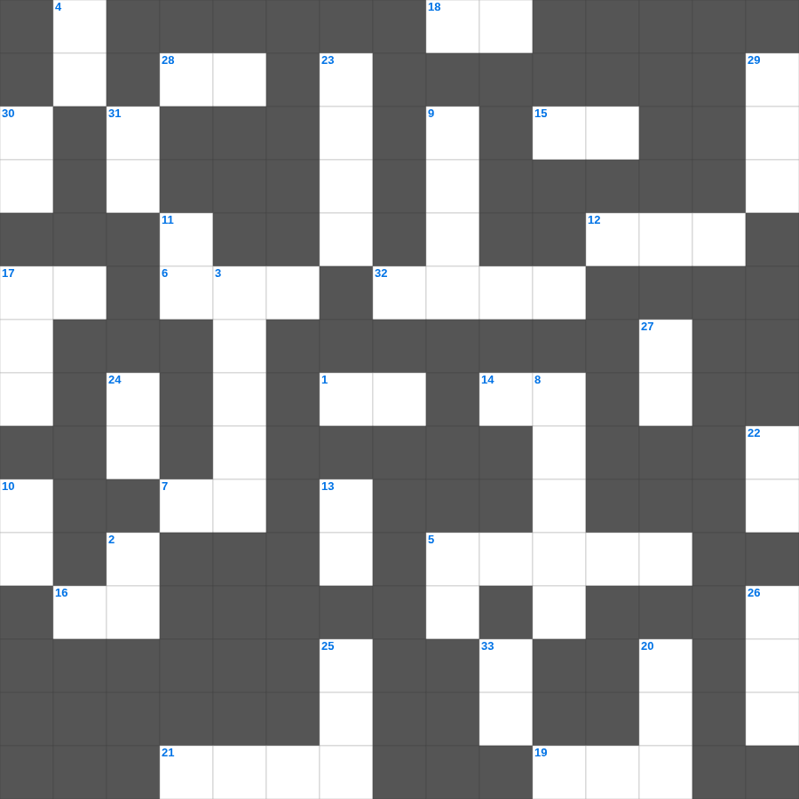

사사기: 나실인 삼손
📌 서비스 정의
십자가로세로는 교회 주보와 주일학교에서 사용할 수 있는 성경 기반 가로세로 퍼즐 서비스입니다. 성경 인물, 사건, 핵심 구절을 바탕으로 제작되었습니다. 온라인 풀이 및 인쇄 기능을 제공합니다.
📖 사사기란?
사사기는 가나안 정복 후 사사들이 이스라엘을 다스리던 시대를 기록합니다. 반복되는 배도와 구원의 패턴이 나타나며 총 21장입니다.
📚 사사기의 주요 사건·주제
에훗과 드보라의 구원 · 기드온의 300명 용사 · 삼손과 들릴라 · 입다의 서원 · 미가의 신상 사건
사사기를 주제로 한 사사기 무료 성경퀴즈입니다. 35개의 단어를 맞춰보세요! 가로세로 낱말 퍼즐 형식으로 사사기의 핵심 내용을 재미있게 복습할 수 있습니다.

📝 가로 힌트
1. 믿음의 이것으로 악한 자의 화전을 소멸함
5. 남은 조각을 거둔 바구니의 수
6. 예수님이 자라나신 동네
7. 실로암 못에서 눈을 씻고 보게 된 사람
12. 아론의 지팡이에서 핀 꽃
14. 인류 최초의 동물원 원장은 누구일까요?
15. 백합화는 솔로몬의 이것보다 더 아름답다
16. 단련하신 후에는 내가 이것 같이 나오리라
17. 예수님이 광야에서 40일간 받으신 것
18. 제물을 통째로 태워 드리는 제사
19. 한 해의 첫 열매를 드리는 절기
21. 죽은 나사로를 향해 하신 명령
28. 엘리야가 회오리바람을 타고 간 곳
32. 주님 가르쳐 주신 기도
📝 세로 힌트
2. 너희는 세상의 빛과 이것이라
3. 강도를 만난 자의 진정한 이웃
4. 하나님이 세상을 창조하신 기간(일)
5. 야곱의 아들 수
8. 바울이 아덴(아테네)에서 복음을 전한 곳
9. 요나를 삼켰던 존재
10. 예수님이 우리 죄를 대신해 돌아가심
11. 물고기 배 속에서 회개한 선지자
13. 너는 내게 부르짖으라 내가 네게 이것하겠고
17. 모세가 십계명을 받은 산
20. 광야 생활을 기억하며 텐트를 치는 절기
22. 곳곳에 기근과 이것이 있으리니
23. 바울이 복음을 전하다가 돌에 맞은 곳
24. 여호와 이것: 준비하시는 하나님
25. 이스라엘의 유일한 여성 사사
26. 예수님이 광야에서 시험받으신 기간
27. 여호와는 나의 이것이시니 내게 부족함이 없으리로다
29. 가나 혼인잔치에서 물이 이것이 된 기적
30. 하나님은 이것이시라
31. 지성소와 성소를 가로막고 있던 천
🧩 이 퍼즐에서 배우는 내용
이 퍼즐은 사사기: 나실인 삼손의 핵심 단어와 개념을 자연스럽게 복습할 수 있도록 구성되었습니다. 주일학교 수업이나 개인 성경공부에서 학습 내용을 점검하는 용도로 바로 활용할 수 있습니다.
🧑🏫 교회 교육 자료 활용
이 퍼즐은 주일학교 교재 추천 자료로 활용할 수 있고, 주일학교 주보에 넣기 좋은 분량으로 구성되어 있습니다. 수업용 주일학교 교안에 활동지로 붙이거나, 예배 후 복습용 주일학교 공과교재로 바로 사용할 수 있습니다.
🏷️ 키워드
사사기 무료 성경퀴즈, 사사기, 십자가로세로, 성경퀴즈, 말씀퀴즈, 가로세로퍼즐, 주일학교 교재 추천, 주일학교 주보, 주일학교 교안, 주일학교 공과교재